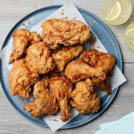

Fried Chicken

Description
Fried chicken is a dish of chicken pieces coated with seasoned flour or batter and pan-fried, deep fried, pressure fried, or air fried. The breading gives the chicken a crispy crust while keeping the meat juicy. The chicken is cut at the joints with the bones and skin left
Ingredients
- Chicken
- Buttermilk
- Flour
- Seasoning
- Oil
Steps
- Make the breading
- Dredge the chicken
- Fry the chicken